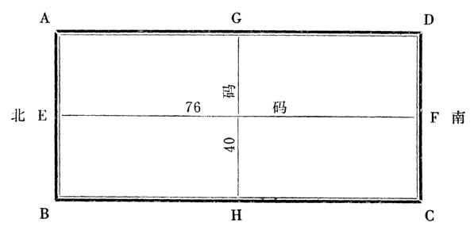

马克思致恩格斯
曼彻斯特
[1851年]5月5日[于伦敦]
亲爱的恩格斯：
附上一份关于在农业中应用电的文章的抄件，是逐字逐句用英文抄下来的。请你立即答复我：
（1）你对这个问题有什么看法；
（2）请你用普通的德语给我解释这个事情，因为我不完全明了。226

“把一块土地分成各长七十六码和宽四十码的长方形；所以每一块地恰好是一英亩。上图就是这样一个长方形的平面图。
在A、B、C、D各点上打上木桩。外沿线代表系在各个木桩上的粗铁线，互相联结，围成一个四边形，埋入地下三英寸。在E和F两点上竖起十五英尺高的杆子。在E点上用一根铁线同地下横线相联结，沿着杆子拉到上端，然后再经过四边形的中间拉到竖在Ｆ点杆子的上端，从杆子上端垂下与地下横线联结，固定在F点。同时应当指出，四边形必须由北往南构成，从E点拉到F点的铁线要与赤道成直角。大家知道，大气中产生着大量的电，电随着地球的运行而不断地由东往西移动。电被从E点拉到F点的导线所吸收，并传到在地下由A、B、C、D围成四边形的铁线上来……所需要的电量可以用下述方法取得：在G点地下放一袋木炭，在Ｈ点安些锌片，把两者用一条导线联结起来，使这条导线经过两根杆子，与经过E和F两点的杆子的导线相同，并且同经过E和F两点的纵线交叉。这样装置所需的费用每英亩合一英镑，只要每年注意保护铁线并重新安装，可用十至十五年。”
“杆子要用干木材做。随着面积的扩大，费用将逐步降低……划定地块的方法如下。用罗盘和一定长度的绳子测定木桩的位置，地下导线通过一个小的U字钉固定在木桩上。一定要注意使地下导线的纵的方向按照罗盘由正北往正南，而横的方向由正东往正西。这条导线必须埋入地下二至三英寸深。这样，地下线路就完成了。架空线的两端必须与地下线相联结。因此带有U字钉的木桩必须打进地下，而两根杆子（一根十四英尺，另一根十五英尺）必须根据罗盘按由正北往正南的方向安装；铁线经过这两根杆子，将其两端固定在木桩上，同时必须在这些地方与地下线相联结。架空线不要拉得太紧，以免被风刮断。”
事情就是这样。
德国的“中央人物”不知是第多少次又联合了起来，于是就出现了豪格将军关于从5月10日起出版他的杂志《宇宙》的通告，参加者有卢格先生、金克尔先生，隆格先生等人。这将是很妙的。
刚才塔普曼FN1带来米凯尔的信，从信中看出，德国民主派——以及某些共产主义者——由卢格的不来梅的臭小报FN2带头，正在不知疲倦地对我进行诽谤，而德国庸人和施特劳宾人50对这类东西自然是狼吞虎咽的。这些家伙显然是对我怕得要死，因为他们现在正在采取各种手段，想使我在德国居住不成。
你的 卡·马·
琼斯昨天作了一次反对合作社运动的真正出色的演讲，他在演讲中公开攻击了他自己的听众。他对我说，同哈尼合伙出版报纸的打算大概不会有什么结果，因为无法同他的妻子打交道。他暂时将以自己的力量出版一个杂志227。
脚 注
FN1 皮佩尔。——编者注
FN2 《不来梅每日纪事报》。——编者注
注 释
50 施特劳宾人（Straubinger）是德国的流动的手工业帮工。马克思和恩格斯用这种名称来称呼那些在很大程度上还受着落后的行会意识和成见支配的德国手工业者，这些人抱着反动的小资产阶级幻想，认为可以从资本主义的大工业退回到小手工业去。——第48、55、68、69、75、79、90、113、127、136、169、265、300、307、370、377、393、400、619页。
226 下面的文章是马克思从1845年4月26日和5月3日《经济学家》杂志第17期和第18期发表的《电和农业》一文中摘录的。——第263页。
227 指1851―1852年在伦敦出版的宪章派机关刊物《寄语人民》（《Notes to the People》）周刊，它的主编是厄·琼斯。由于哈尼转入小资产阶级民主派阵营，这个刊物——宪章派中的革命的无产阶级派的喉舌的出版，就具有了特别的意义。马克思和恩格斯曾经支持这个杂志，参加该杂志的编辑和出版工作，并且从1851年6月到1852年4月在这个杂志上发表了许多文章。——第265页。